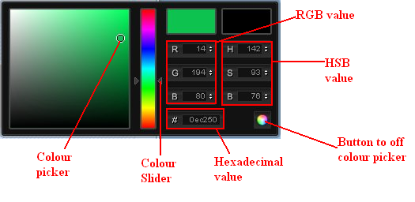
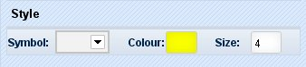
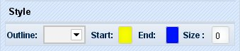
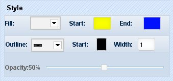
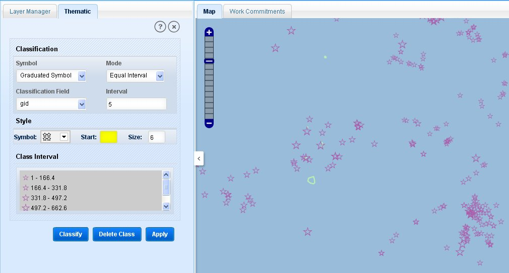
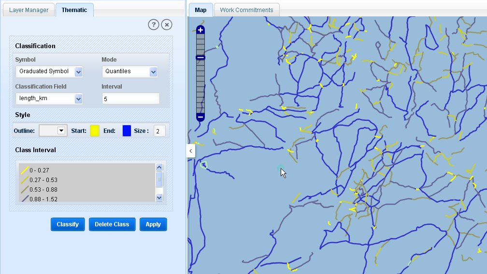
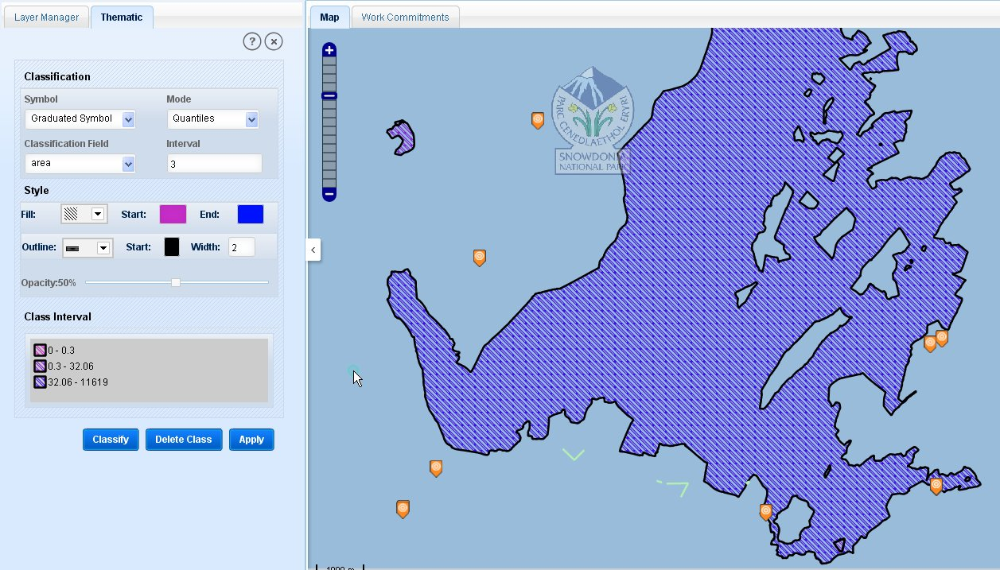

Thematic functionality allows users to set symbolic and colour thematic representation of active layer.
Click on the thematic tool, application will show ‘Thematic’ tab in the left panel.
This tab has three parts: ‘Classification’, ‘Style’ and ‘Class Interval’.
Application shows options in the thematic tab according to the feature type.
In classification part of the tab application provides three drop-down list boxes and a text box:
Symbol Type: It has only option ‘Graduated Symbol’.
Mode: It has two values:
- Equal Interval: In this, features will be classified into specified intervals according to attribute values. For example if a layer has 200 polygon features with ‘Area’ attribute. And it has value for that attribute ranging from 1 to 2000 square meter. For that layer if equal interval is selected with 5 intervals, it will be classified in 5 intervals like 1-400 (80 polygons), 401-800(10 polygons), 801-1200 (60 polygons), 1201-1600(5 polygons) and 1601-2000 (45 polygons) irrespective of the numbers of features in each interval.
- Qunatiles: In this mode, features will be classified into specified intervals according to numbers of attributes. For the above example suppose the layer contains 200 polygons having area from 1 to 2000 square meter. Then for ‘Quantiles’ mode, layer will be classified in 5 intervals in such a way that every interval will have 40 numbers of polygon like 1-50 (40 polygons), 51-350 (40 polygon), 351-900 (40 polygons), 901-1700 (40 polygons) and 1701-2000 (40 polygon). The classification will be made irrespective of attribute values.
Classification Field: This list box contains the attribute fields of the active layer.
Interval: In this text box user can specify the number of classification intervals.
Below to classification part, tab has ‘Style’ part which generally contains the colour choices and symbol choices according to the feature type (point, line and polygon).
Point features:
It has a drop-down list box ‘Symbol’ which contains the list of symbols.

Colour Picker Box
Then it has a colour picker with ‘Colour’ caption. As users clicks on the colour box application opens a colour picker from which user can select required colour. User can pick the colour by using interactive slider and the colour box or user can pick the colour by specifying RGB (Red, Green and Blue) value or HSB (Height for the slider and Side and Bottom value for the colour box) or the hexadecimal value of the colour . To close the colour-picker, click on the button in bottom- right corner.
Size text box is for point size.

Style for point features
Line feature:
For line feature the style part of the tab contains a drop-down list box ‘Outline’ which has a list of symbols (like solid, dotted, dashed) for line features.
Two colour boxes ‘Start’ for the starting colour of the classification and ‘End’ for the ending colour of the intervals.
Size text box is for width of the line.

Styles for line features
Polygon features:
For polygon features style part has a drop-down box ‘Fill’ in which user can select the fill style for polygon.
Two colour boxes ‘Start’ and ‘End’. In start user can pick the starting colour for the intervals and in End colour box user can pick the ending colour of classification.

Styles for polygon features
From the ‘Outline’ list box user can select style for the outline of polygons
With colour box user can select outline colour for polygons
In the ‘Width’ text box users can enter the width of the outline of polygons.
Below this, style part has ‘Opacity’ slider by user can set the opacity level for the fill of polygons.
Below style, thematic tab has ‘Class Interval’ part in which a box is there with three buttons: ‘Classify’, ‘Delete Class’ and ‘Apply’. In the box user will be able to see the preview of the classification.
To add the preview to that box, click on the ‘Classify’ button.
To remove a preview from that box, click on ‘Delete Class’ button.
To apply the classification to the map features, click on ‘Apply’ button.
To remove the thematic view, click on ‘Clear’ tool.
To apply colour thematic on a layer of point features:
Make that layer active.
In classification part, ‘Symbol Type’ is by default ‘Graduated Symbol’.
Select mode as ‘Quantiles’ or ‘Equal Interval’ from drop- down list.
Select classification field from the drop- down list according which colour thematic will be applied to that layer.

Thematic representation of point features
Enter the numbers of intervals in ‘Interval’ text box.
In style part select the symbol type, select and colour, enter the size of the point.
In Class interval part, click on classify, the preview will be shown in the box in specified numbers of intervals.
Click on ‘Apply’ button. Application will apply the classification to the layer in specified intervals on map canvas.
The point will be classified in given intervals according to the symbol size. The specified size will be the limit (maximum size).
Select the mode as ‘Equal Interval’ or ‘Quantiles’ as required.
Select classification field from the list and enter the value of intervals required.
Select the outline style from the list.
Select start and end colours of intervals.
Specify the size of the line. Click on classify button. The preview will be shown in the box and click on apply button.
The line features will be classified in the given number of intervals with specified colour and size.
To remove the colour thematic, click on clear tool.
User can delete the classification preview by clicking on Delete Class button.

Thematic representation of line features
Same as for the point and line layer, for polygon layer ‘Symbol Type’ is ‘Graduated Symbol’. And user has to select the mode from ‘Quantile’ or ‘Equal Interval’.
Select the classification field from the attributes list.
Specify the numbers of intervals in ‘Interval’ text box.
In style part, select the fill type from the drop-down list.
Then select start and end colour for the fill of polygons.
Select outline style from the drop-down list for polygon.
Select fill colour and specify the width of the outline in ‘Width’ text box.
Set the opacity of the polygon fill by using the opacity slider.
After filling and specifying all the details, click ‘Classify’ button. A preview of classification will be shown in the ‘Class Interval’ box.
User can delete this preview by clicking on ‘Delete Class’ button.
And to apply this classification on map canvas, click on ‘Apply’ button. The polygon layer will be classified according in given details like number of intervals, the selected colour and styles.
To remove the colour thematic from polygons, click on ‘Clear’ tool.

Thematic representation for Polygon features